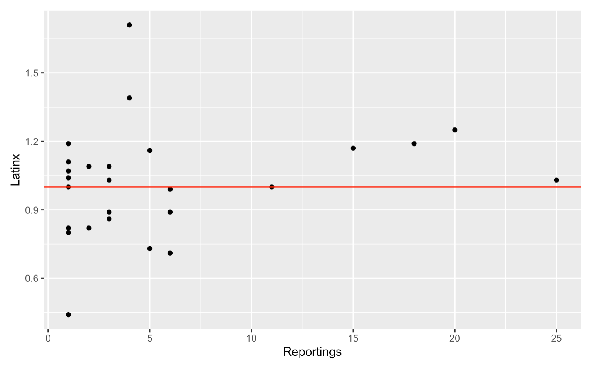

The Statistical Transparency of Policing Report, published in December of 2022 by the Oregon Criminal Justice Commission, details a data collection and analysis effort spent over the time period between the beginning of July 2021 and the end of June 2022. Specifically, the commission analyzed whether or not Oregon police departments were discriminating against minority groups during the process of routine traffic and pedestrian stops. It did so mainly in three ways: the commission checked if minorities are stopped more often during the day, when their race can be easily identified, then in the evening, when it cannot. The commission also analyzed whether or not minorities are cited, searched, or arrested more often than white people given that all other conditions remain the same during a stop. Finally, the OCJC looked into the success of stops; if proportionately more stops of white people result in the seizure of contraband than stops of minorities, that would be evidence of racial discrimination. Moreover, if police officers aren’t discriminating racially when stopping people, the success rates should be relatively the same across all groups. After completion of this thorough analysis, the commission concluded that no individual policing agencies in Oregon show enough evidence of discriminatory practices to warrant further investigation. This conclusion could very easily be taken as meaning that Oregon policing is entirely fair and without discrimination. I believe, for many reasons, that this would be a premature and ignorant assumption to make. Firstly, the standard that must be met in order for policing agencies to be considered discriminatory is far too strict: the agency must be proven to be discriminatory at a 95% confidence interval in two of the three categories listed above. It is far too difficult for an agency to meet this mark for several reasons. Small sample sizes prevent many measurements from receiving significance status, and even yet, many departments are proven to be discriminatory at a 95% confidence interval for one of the three measurements. More specifically, 28 agencies had statistically significant disparities between races regarding minority citings, searches, and arrests in stops of similar conditions. Additionally, the analysis looked for discrimination at the departmental level, and because the stops were reported anonymously, it couldn’t possibly show how many individuals might be exhibiting discriminatory practices. I was interested in seeing whether higher numbers of profiling complaints by department were associated with more discriminatory practices as shown by daylight versus nighttime stoppings and success rates, even if significance wasn’t found. This might show that the racial disparities should be treated with severe seriousness despite not proving statistically significant. I created a scatter plot in RStudio showing the number of profiling reportings per agency versus the likelihood of latinx drivers being stopped in daylight compared to darkness. This plot showed no obvious trend in terms of agencies with higher reporting counts being associated with discrimination against latinx drivers, although it is worth noting that all agencies with more than 11 reportings between 2021 and 2022 stop latinx drivers more often in the daylight than in the darkness. I think data should continue to be collected regarding police stoppings in Oregon. Without this system of checks, it becomes easy for police departments to become entirely tyrannical.
